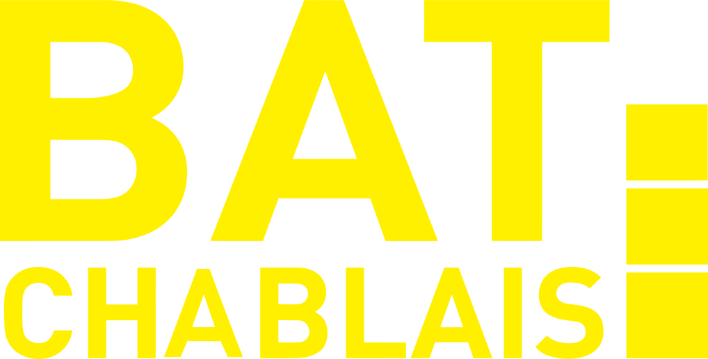

Annotations de plans
📂 Importer un PDF
↶ Annuler
↷ Rétablir
◀
▶
✨ Faire la synthèse
✋
✏️
🖍️
☁️
↗️
💬
✅
🧽
↶
−
100 %
+
⤢
Synthèse en cours…
By Sébastien REY
Annotations & synthèse de plans
By Sébastien REY